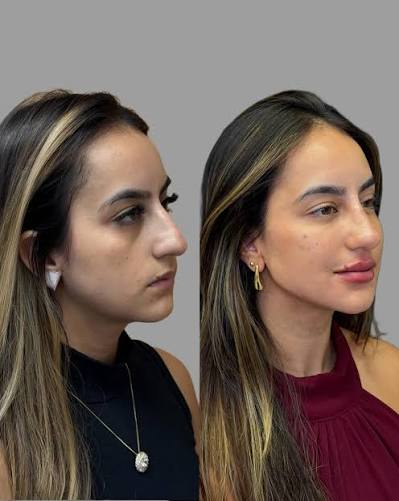
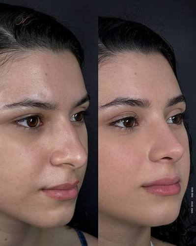
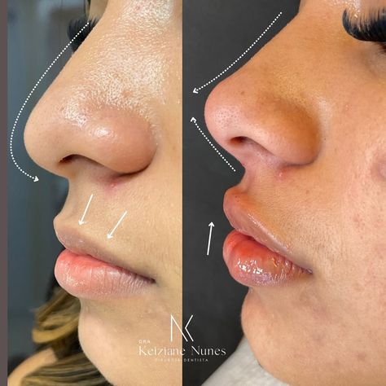

Toxina Botulínica
Suaviza linhas de expressão e previne novas marcas, mantendo a expressão natural.
Estética avançada
Rejuvenescimento com resultado natural: avaliação individual, produtos regulamentados e protocolos feitos para o seu rosto.
Agendar minha avaliaçãoSou a Dra. Sabrina e a minha jornada na estética começou com um propósito claro: ajudar pessoas a sentirem-se bem na própria pele, respeitando sempre a sua identidade e os seus traços únicos.
Acredito que a verdadeira beleza não está na transformação radical, mas nos detalhes que devolvem a autoestima. Cada rosto conta uma história, e o meu trabalho é unir a ciência, a segurança e um olhar clínico minucioso para iluminar a sua melhor versão.
Cada procedimento é indicado só depois da avaliação.
Suaviza linhas de expressão e previne novas marcas, mantendo a expressão natural.
Volume e contorno com ácido hialurônico, incluindo a harmonização labial.
Estimulam o seu próprio colágeno e melhoram firmeza e qualidade da pele.
Sutileza, respeito e foco em realçar a sua beleza natural.



Atendimento cuidadoso do começo ao fim. Me senti segura e o resultado ficou super natural.
Ela explicou cada etapa e não indicou nada além do necessário. Recomendo muito!
Clínica impecável e profissional de confiança. Voltarei com certeza.
O desconforto costuma ser leve. Quando necessário, usamos anestésico tópico para deixar o procedimento mais confortável.
Depende do procedimento: alguns mostram efeito em dias; bioestimuladores e microagulhamento evoluem ao longo de semanas.